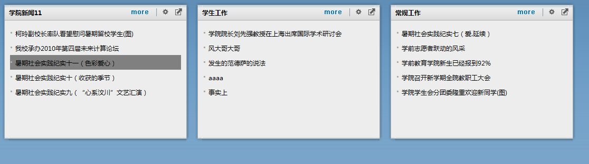

接上次的帖子：http://www.cnblogs.com/yexiaochai/archive/2012/01/22/2328729.html
简单的更新了一下代码，主要针对datalist，这次主要贴出更新后的代码以及演示一下例子：
因为过年的关系，感觉自己很懒，贴出来算是一种自我激励吧，让自己有写下去的动力
功能说明
就数据缓存一块可能要放在最后优化
① datalist嵌套
② datalist编辑、删除按钮出现（还有问题）
③ datalist根据数据源、样式模板的不同展现方式不同
④ 各个html元素事件绑定
实例
我现在有一张新闻类型表；一张新闻表。
第一个datalist将所有类型列表展示出来，
在datalist里面嵌套一个具体新闻的datalist，现在显示三条，
然后每个新闻类型上面有个最大化，点击则实例化一个datalist，将对应新闻类型的10条新闻列出来。
具体新闻上有个还原按钮，点击则还原。
实例贴图
① datalist嵌套，新闻类型嵌套新闻

② 点击最大化按钮界面
点击最小化后便还原。
所用到的datalist模板
首页外层新闻类型datalist模板
<div>
<div id="itemId" style="display:none;">{%ItemID%}</div>
<h1>{%ItemName%}</h1>
<input class="maxOrMinSize" type="button" value="最大化" />
</div>
<div id="itemNews">
</div>
<hr/>
首页内层datalist新闻列表模板
<div>
{%newsName%}
</div>
最大化后的模板
<div>
{%newsName%}
<input class="newsMore" value="详情" type="button"/>
</div>
<div style=" display:none;" class="newsContent">
{%newsContent%}
</div>
<hr/>
datalist.js以及itemTemplate.js和Ajax后台处理程序
/// <reference path="../scripts/jquery-1.4.1.js" />
/*
思考：
1 如何给数据项某个html标签添加事件
因为我们并不知道生成的dom树是什么，所以模板里面的html标签无法绑定事件，暂时只能后期绑定
*/
/* 控件生成流程
*/
var dataList = function (id, templateUrl) {
this.attribute = {
id: id,
name: "",
title: ""
};
this.style = {
width: "",
height: ""
};
this.itemEvent = {
onClick: null,
onDblclick: null,
onKeydown: null,
onKeypress: null,
onKeyup: null,
onMousedown: null,
onMousemove: null,
onMouseout: null,
onMouseover: null,
onMouseup: null
};
this.deleteButton = {
html: null,
visible: false,
clickEvent: null
};
this.editButton = {
html: null,
visible: false,
clickEvent: null
};
this.cancelButton = {
html: null,
visible: false,
clickEvent: null
};
this.saveButton = {
html: null,
visible: false,
clickEvent: null
};
this.itemElementEvent = {};
this.className = "";
this.itemClassName = "";
this.htmlElement = null;
this.templateUrl = templateUrl ? templateUrl : ""; //提供项目模板地址
this.htmlTemplateText = "";
this.items = [];
this.dataSource = {}; //应该支持不同数据源
};
dataList.prototype.dataBind = function (element) {
this.init();
var sender = this;
sender.buttonLoad();
sender.attributeLoad();
var templateText = sender.htmlTemplateText;
var itemEvent = sender.itemEvent;
var itemElementEvents = sender.itemElementEvent;
var itemClassName = sender.itemClassName;
//需要替换itemTemplate
var itemIndex = 0;
$.each(sender.dataSource, function (dataKey, dataValue) {
var _item = new itemTemplate();
_item.parentId = sender.attribute.id;
_item.htmlTemplateText = templateText;
_item.event = itemEvent;
_item.elementEvent = itemElementEvents;
_item.className = itemClassName;
//传递父ID ,当前模板编号，源模板，当前项数据项源，事件绑定源
_item.load(itemIndex, dataValue);
var _itemElement = _item.htmlElement;
sender.items.push(_item);
sender.insertDomItem(_itemElement);
itemIndex++;
});
//呈现前，样式加载
sender.styleLoad();
element.append(sender.htmlElement);
//模板中的html标签的事件绑定
var items = sender.items;
$.each(items, function (i, item) {
item.bindAllElementEvent();
});
};
dataList.prototype.buttonLoad = function () {
var sender = this;
var htmlElement = sender.htmlElement;
var element = sender.htmlElement;
var id = sender.attribute.id;
var button = sender.deleteButton;
var buttonText = "删除";
this.buttonBind(id + "_delete", button, element, buttonText);
button = sender.editButton;
buttonText = "编辑";
this.buttonBind(id + "_edit", button, element, buttonText);
button = sender.cancelButton;
buttonText = "取消";
this.buttonBind(id + "_cancel", button, element, buttonText);
button = sender.saveButton;
buttonText = "保存";
this.buttonBind(id + "_save", button, element, buttonText);
};
dataList.prototype.buttonBind = function (id, btObj, el, buttonText) {
var sender = this;
var html = btObj.html;
var visible = btObj.visible;
var clickEvent = btObj.clickEvent;
if (visible) {
if (!html) {
html = $("<div>" + buttonText + "</div>");
}
html.attr("id", id);
el.append(html);
if (clickEvent && typeof (clickEvent) == "function") {
html.click(function () {
clickEvent.call(sender);
});
}
}
};
dataList.prototype.init = function () {
var sender = this;
var templateUrl = sender.templateUrl;
if (!templateUrl || templateUrl.length == 0)
templateUrl = "itemTemplate/itemTemplate.spt";
this.htmlTemplateText = getAjaxStr(templateUrl);
var htmlElement = $("<div id='" + sender.attribute.id + "'></div>");
if (sender.className && sender.className.length > 0)
htmlElement.attr("class", sender.className);
sender.htmlElement = htmlElement;
};
dataList.prototype.attributeLoad = function () {
var sender = this;
var element = sender.htmlElement;
$.each(sender.attribute, function (attributeKey, attributeValue) {
if (attributeKey != "id")
if (attributeValue && attributeValue.length > 0) {
element.attr(attributeKey, attributeValue);
}
});
}
dataList.prototype.styleLoad = function () {
var sender = this;
var element = sender.htmlElement;
$.each(sender.style, function (styleKey, styleValue) {
// alert(styleKey + ":" + styleValue);
if (styleValue) {
// alert(element);
element.css(styleKey, styleValue);
}
});
}
dataList.prototype.insertDomItem = function (domItem) {
var sender = this;
var element = sender.htmlElement;
element.append(domItem);
};
//异步获取文件
function getAjaxStr(url) {
var templateStr = "";
$.ajax({
url: url,
async: false,
dataType: "html",
success: function (result) {
templateStr = result;
if (templateStr)
return templateStr;
},
error: function (e) {
alert("模板加载错误：" + e.toString());
}
});
return templateStr;
}
/// <reference path="../scripts/jquery-1.4.1.js" />
var itemTemplate = function () {
//源模板文本，现在为itemTemplate.spt
//可能是文本，可能是js文件，可能是字符串
//最终形成字符串传给htmlTemplateText
this.htmlTemplateText = "";
//最终会形成一独立html字符串，dom结构的标签
this.htmlElement = null;
this.idPrefix = "id_"; //id前缀
this.parentId = "";
this.id = "";
this.className = "";
this.event = {
onClick: null,
onDblclick: null,
onKeydown: null,
onKeypress: null,
onKeyup: null,
onMousedown: null,
onMousemove: null,
onMouseout: null,
onMouseover: null,
onMouseup: null
};
this.elementEvent = null;
};
itemTemplate.prototype.load = function (itemIndex, itemDataSource) {
var sender = this;
var id = sender.parentId + "_" + sender.idPrefix + itemIndex;
sender.id = id;
var element = $("<div id='" + id + "'></div>");
var html = "";
var _templateText = sender.htmlTemplateText;
tempHtm = _templateText;
$.each(itemDataSource, function (i, item) {
var id = item;
var regStr = "/\\{%" + i + "%\\}/g";
var reg = eval(regStr);
tempHtm = tempHtm.replace(reg, item);
});
html = tempHtm;
element.append($(html))
if (sender.className && sender.className.length > 0)
element.attr("class", sender.className);
sender.htmlElement = element;
sender.bindEvent();
};
itemTemplate.prototype.bindEvent = function () {
var sender = this;
var element = sender.htmlElement;
var events = sender.event;
$.each(events, function (eventKey, funcName) {
// alert(funcKey + "---" + funcValue);
if (funcName && typeof (funcName) == "function") {
var _event = eventKey;
_event = _event.substring(2, _event.length);
_event = _event.toLowerCase();
element.unbind(_event);
element.bind(_event, function () {
funcName.call(sender);
});
}
});
};
itemTemplate.prototype.getItemElement = function (elementKey) {
var sender = this;
var id = "#" + sender.id + " " + elementKey;
var element = $(id);
return element;
};
itemTemplate.prototype.bindAllElementEvent = function () {
var sender = this;
var itemElementEvents = sender.elementEvent;
// alert(element+"=="+id);
//数据项元素事件绑定
$.each(itemElementEvents, function (eventObjKey, eventObj) {
var elementKey = eventObj.elementKey;
var eventType = eventObj.eventType;
var funcName = eventObj.funcName;
sender.bindElementEvent(elementKey, eventType, funcName);
});
};
itemTemplate.prototype.bindElementEvent = function (elementKey, eventType, funcName) {
var sender = this;
var id = "#" + sender.id + " " + elementKey;
var element = $(id);
if (funcName && typeof (funcName) == "function") {
if (eventType == "ready") {
element.ready(function () {
funcName.call(sender);
});
} else {
element.unbind(eventType);
element.bind(eventType, function () {
funcName.call(sender);
});
}
}
};
//ajax后台处理代码：
using System;
using System.Collections.Generic;
using System.Linq;
using System.Web;
using System.Web.UI;
using System.Web.UI.WebControls;
using System.Data;
using Newtonsoft.Json;
public partial class js仿net控件_02dataList_Ajax : System.Web.UI.Page
{
protected void Page_Load(object sender, EventArgs e)
{
if (!IsPostBack)
{
DataAccess db = new DataAccess();
DataTable dt = null;
string sql = "";
if (Request["sql"] != null)
{
sql = Request.QueryString["sql"].ToString();
dt = db.GetDataTable(sql);
}
string jsonText = getJson(dt);
Response.Clear();
Response.ContentType = "application/json";
Response.Write(jsonText);
Response.End();
}
}
private string getJson(DataTable dt)
{
string jsonText = JsonConvert.SerializeObject(dt);
return jsonText;
}
private string getStr(DataTable dt)
{
string json = "{";
for (int i = 0; i < dt.Rows.Count; i++)
{
json = json + "row_"+i.ToString()+":"+"{";
for (int j = 0; j < dt.Columns.Count; j++)
{
string colKey = dt.Columns[j].ColumnName;
string colValue = dt.Rows[i][j].ToString();
//colValue = colValue.Replace("\"","\\\"");
json = json + colKey + ":" + colValue + ",";
}
json = json.Substring(0, json.Length - 1);
json = json + "},";
}
json = json.Substring(0, json.Length - 1);
json = json + "}";
return json;
}
}
前台调用，此处详细说明下
<!DOCTYPE html PUBLIC "-//W3C//DTD XHTML 1.0 Transitional//EN" "http://www.w3.org/TR/xhtml1/DTD/xhtml1-transitional.dtd">
<html xmlns="http://www.w3.org/1999/xhtml">
<head>
<title></title>
<script src="scripts/jquery-1.4.1.js" type="text/javascript"></script>
<script src="js/itemTemplate.js" type="text/javascript"></script>
<script src="js/dataList.js" type="text/javascript"></script>
<script type="text/javascript">
$(document).ready(function () {
var dataItems = {};
$.ajax({
type: "post",
url: "Ajax.aspx?sql=select top 3 * from Item where ItemKind=1 ",
type: "json",
async: false,
success: function (data) {
dataItems = data;
}
});
var $div = $("#wl");
var listItem = new dataList("newsItem", "itemTemplate/items.spt");
var itemElementEvents = {
loadItemNews: {
elementKey: "#itemNews",
eventType: "ready",
funcName: elementDatabind
},
newsMaxOrMinSize: {
elementKey: ".maxOrMinSize",
eventType: "click",
funcName: newsMaxOrMinSizeClick
}
};
listItem.itemElementEvent = itemElementEvents;
listItem.dataSource = dataItems;
listItem.dataBind($div);
function newsMaxOrMinSizeClick() {
var sender = this;
var $itemId = sender.getItemElement("#itemId");
var $maxNews = $("#maxNews");
var id = $itemId.html();
var dataNews = {};
$.ajax({
type: "post",
url: "Ajax.aspx?sql=select top 10 newsId,newsName, newsContent from news where itemId='" + id + "' ",
type: "json",
async: false,
success: function (data) {
dataNews = data;
}
});
var _itemElementEvents = {
contentClick: {
elementKey: ".newsMore",
eventType: "click",
funcName: maxContentMoreClick
}
};
var newsMaxList = new dataList("newsMax", "itemTemplate/itemMax.spt");
newsMaxList.deleteButton.visible = true;
newsMaxList.deleteButton.html = $("<input value='最小化' type='button' ></a>");
newsMaxList.deleteButton.clickEvent = newsMin;
newsMaxList.editButton.visible = true;
newsMaxList.editButton.html = $("<input value='编辑' type='button' ></a>");
newsMaxList.editButton.clickEvent = newsMin;
newsMaxList.itemEvent.onMousemove = itemmousemove;
newsMaxList.itemEvent.onMouseout = itemmouseout;
newsMaxList.itemElementEvent = _itemElementEvents;
newsMaxList.dataSource = dataNews;
newsMaxList.dataBind($maxNews);
$div.hide(1000);
$maxNews.show(1000);
}
function elementDatabind() {
var sender = this;
var $itemId = sender.getItemElement("#itemId");
var $itemNews = sender.getItemElement("#itemNews");
var id = sender.id;
var id = $itemId.html();
var s = $itemNews.html();
var dataNews = {};
$.ajax({
type: "post",
url: "Ajax.aspx?sql=select top 5 newsId,newsName, newsContent from news where itemId='" + id + "' ",
type: "json",
async: false,
success: function (data) {
dataNews = data;
}
});
var listItemNews = new dataList(id + "_news", "itemTemplate/itemTemplate.spt");
listItemNews.itemEvent.onMousemove = itemmousemove;
listItemNews.itemEvent.onMouseout = itemmouseout;
listItemNews.dataSource = dataNews;
listItemNews.dataBind($itemNews);
}
function newsMin() {
var sender = this;
var $maxNews = $("#maxNews");
$maxNews.html("");
$div.show(1000);
$maxNews.hide(1000);
}
function maxContentMoreClick() {
var sender = this;
var newsContent = sender.getItemElement(".newsContent");
var contentMore = sender.getItemElement(".newsMore");
if (newsContent.css("display") == "none") {
contentMore.attr("value", "隐藏");
newsContent.css("display", "");
} else {
contentMore.attr("value", "详情");
newsContent.css("display", "none");
}
}
function itemmousemove() {
var sender = this;
var $ee = sender.htmlElement;
$ee.css("background", "Gray");
}
function itemmouseout() {
var sender = this;
var $ee = sender.htmlElement;
$ee.css("background", "white");
}
});
</script>
</head>
<body>
<div id="wl" >
</div>
<div id="maxNews" style=" display:none;">
</div>
</body>
</html>
前台调用说明
① 获得数据源：
[{"ItemID":79,"ParentID":0,"ItemName":"学院新闻11","ItemContent":"","ItemSort":7,"ItemKind":1,"ItemUrl":"","IsTop":0,
"IsImportant":null,"IsHome":null,"NewsSort":null},{"ItemID":150,"ParentID":79,"ItemName":"学生工作","ItemContent":"",
"ItemSort":1,"ItemKind":1,"ItemUrl":"","IsTop":1,"IsImportant":null,"IsHome":1,"NewsSort":null},{"ItemID":162,"ParentID":129
,"ItemName":"常规工作","ItemContent":"","ItemSort":4,"ItemKind":1,"ItemUrl":"","IsTop":1,"IsImportant":null,"IsHome":1,"NewsSort":null}]
第一个datalist的绑定与生成：
var $div = $("#wl");
var listItem = new dataList("newsItem", "itemTemplate/items.spt");
var itemElementEvents = {
loadItemNews: {
elementKey: "#itemNews",
eventType: "ready",
funcName: elementDatabind
},
newsMaxOrMinSize: {
elementKey: ".maxOrMinSize",
eventType: "click",
funcName: newsMaxOrMinSizeClick
}
};
listItem.itemElementEvent = itemElementEvents;
listItem.dataSource = dataItems;
listItem.dataBind($div);
① 准备一个装datalist的容器div
② 初始化datalist为其设置id与对应模板文件地址（其实数据源与模板文件后期必须想法接受多个方案，比如xml或者数组、地址什么的）
③ 因为模板里面的元素我们无法控制，所有使用jquery的选择器进行元素选择（这个必须在该元素生成结束才能事件绑定，这个地方有问题）
注意第一个事件绑定，在这里html元素生成后，便会执行此函数，但是不知道这样写有没有问题
第二个事件便是最大化按钮点击事件
④ 然后bind结束第一个datalist生成结束
具体html代码如下：
<div id="wl">
<div id="newsItem"><div id="newsItem_id_0"><div>
<div id="itemId" style="display: none;">79</div>
<h1>学院新闻11</h1>
<input class="maxOrMinSize" value="最大化" type="button">
</div>
<div id="itemNews">
<div id="79_news"><div id="79_news_id_0"><div>
柯玲副校长率队看望慰问暑期留校学生(图)
</div></div><div id="79_news_id_1"><div>
我校承办2010年第四届未来计算论坛
</div></div><div style="background: none repeat scroll 0% 0% white;" id="79_news_id_2"><div>
暑期社会实践纪实十一（色彩爱心）
</div></div><div style="background: none repeat scroll 0% 0% white;" id="79_news_id_3"><div>
暑期社会实践纪实十（收获的季节）
</div></div><div style="background: none repeat scroll 0% 0% white;" id="79_news_id_4"><div>
暑期社会实践纪实九（“心系汶川”文艺汇演）
</div></div></div></div>
<hr></div><div id="newsItem_id_1"><div>
<div id="itemId" style="display: none;">150</div>
<h1>学生工作</h1>
<input class="maxOrMinSize" value="最大化" type="button">
</div>
<div id="itemNews">
<div id="150_news"><div id="150_news_id_0"><div>
学院院长刘先强教授在上海出席国际学术研讨会
</div></div><div id="150_news_id_1"><div>
风大哥大哥
</div></div><div id="150_news_id_2"><div>
发生的范德萨的说法
</div></div><div id="150_news_id_3"><div>
aaaa
</div></div><div id="150_news_id_4"><div>
事实上
</div></div></div></div>
<hr></div><div id="newsItem_id_2"><div>
<div id="itemId" style="display: none;">162</div>
<h1>常规工作</h1>
<input class="maxOrMinSize" value="最大化" type="button">
</div>
<div id="itemNews">
<div id="162_news"><div id="162_news_id_0"><div>
暑期社会实践纪实七（爱.延续）
</div></div><div id="162_news_id_1"><div>
学前志愿者跃动的风采
</div></div><div id="162_news_id_2"><div>
学前教育学院新生已经报到92%
</div></div><div id="162_news_id_3"><div>
学院召开新学期全院教职工大会
</div></div><div id="162_news_id_4"><div>
学院学生会分团委隆重欢迎新同学(图)
</div></div></div></div>
<hr></div></div></div>
<div id="maxNews" style=" display:none;">
</div>
第二个datalist绑定
function elementDatabind() {
var sender = this;
var $itemId = sender.getItemElement("#itemId");
var $itemNews = sender.getItemElement("#itemNews");
var id = sender.id;
var id = $itemId.html();
var s = $itemNews.html();
var dataNews = {};
$.ajax({
type: "post",
url: "Ajax.aspx?sql=select top 5 newsId,newsName, newsContent from news where itemId='" + id + "' ",
type: "json",
async: false,
success: function (data) {
dataNews = data;
}
});
var listItemNews = new dataList(id + "_news", "itemTemplate/itemTemplate.spt");
listItemNews.itemEvent.onMousemove = itemmousemove;
listItemNews.itemEvent.onMouseout = itemmouseout;
listItemNews.dataSource = dataNews;
listItemNews.dataBind($itemNews);
}
此处接着第一个datalist的事件绑定，绑定结束后便又初始化各个datalist，并加入对应容器中。并加上新闻列滑动事件。
注意此处id最好不要重复
点击最大化后，弹出的第三个datalist
function newsMaxOrMinSizeClick() {
var sender = this;
var $itemId = sender.getItemElement("#itemId");
var $maxNews = $("#maxNews");
var id = $itemId.html();
var dataNews = {};
$.ajax({
type: "post",
url: "Ajax.aspx?sql=select top 10 newsId,newsName, newsContent from news where itemId='" + id + "' ",
type: "json",
async: false,
success: function (data) {
dataNews = data;
}
});
var _itemElementEvents = {
contentClick: {
elementKey: ".newsMore",
eventType: "click",
funcName: maxContentMoreClick
}
};
var newsMaxList = new dataList("newsMax", "itemTemplate/itemMax.spt");
newsMaxList.deleteButton.visible = true;
newsMaxList.deleteButton.html = $("<input value='最小化' type='button' ></a>");
newsMaxList.deleteButton.clickEvent = newsMin;
newsMaxList.editButton.visible = true;
newsMaxList.editButton.html = $("<input value='编辑' type='button' ></a>");
newsMaxList.editButton.clickEvent = newsMin;
newsMaxList.itemEvent.onMousemove = itemmousemove;
newsMaxList.itemEvent.onMouseout = itemmouseout;
newsMaxList.itemElementEvent = _itemElementEvents;
newsMaxList.dataSource = dataNews;
newsMaxList.dataBind($maxNews);
$div.hide(1000);
$maxNews.show(1000);
}
那撒，说是详细说明好像也不详细。最后效果是想以此为基础模拟igoogle的效果。可惜我不是美工，我那个悲剧的css水平确实不行。
若是有用，我以后在持续更新吧。